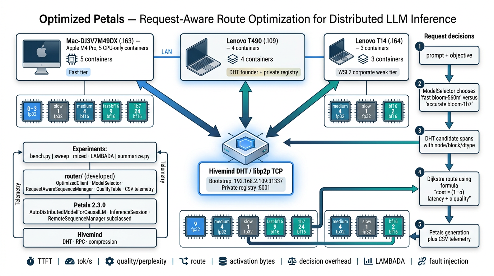

4 · Proposta
Roteador consciente do objetivo
Cada requisição declara um objetivo; o roteador converte esse objetivo em pesos no grafo de blocos do Petals e resolve o menor caminho — sem mudar nada no servidor. O fluxo, passo a passo:

- Objetivo declarado por requisição — o chamador define α (0 = só latência, 1 = só qualidade), um orçamento de latência ou um piso de qualidade; o objetivo viaja num ContextVar (current_objective), então requisições concorrentes podem ter objetivos diferentes no mesmo instante.
- Seleção de modelo (nível 1) (router/selector.py) — dado o objetivo, escolher o tier: bloom-560m (rápido) vs bloom-1b7 (preciso), pela latência prevista + pontuação de qualidade.
- Grafo de blocos com pesos duplos (nível 2) (router/policy.py) — o Nectar repete a mesma busca do Petals (encontrar um caminho de blocos do primeiro ao último), mas avalia cada pedaço do caminho com dois critérios ao mesmo tempo: a rapidez (latência) e a riqueza (qualidade). A qualidade vem de uma tabela medida antes: quão "surpreso" o modelo fica lendo textos de validação — quanto menor a surpresa, melhor a réplica. Para somar os dois critérios numa conta só, a qualidade é convertida para a mesma unidade da latência (segundos), como se qualidade ruim custasse tempo extra.
- Menor caminho combinado — Dijkstra resolve custo = (1 − α)·latência + α·custo_qualidade aresta a aresta; o caminho resultante é decomposto em spans (blocos consecutivos no mesmo par).
- Objetivos com restrição caminham no dial — orçamento de latência: começa em α=1 (melhor qualidade) e divide α por 2 até a latência prevista caber (máx. 7 passos); piso de qualidade: começa em α=0 (melhor latência) e caminha α para cima até a perplexidade prevista caber — uma busca binária no dial latência↔qualidade.
| Objetivo | Comportamento do roteador |
|---|---|
| α puro (0–1) | um Dijkstra com o peso fixo — o dial latência↔qualidade |
| Orçamento de latência (SLA) | melhor qualidade possível que ainda respeita o SLA — caminha α para baixo |
| Piso de qualidade | latência mais baixa possível que ainda respeita o piso — caminha α para cima |
Exemplo: três requisições no mesmo instante
O enxame anuncia no DHT as réplicas do bloom-560m: no Mac (rápidas, bf16) e no T14 (mais lentas, fp32). Três requisições chegam juntas e seguem caminhos diferentes:
1 · Chat — orçamento de latência de 1,0 s. O roteador começa otimista em α=1: o Dijkstra escolhe a cadeia de 7 spans pelas réplicas fp32 do T14, a melhor qualidade prevista (perplexidade 22,0) — mas a latência prevista é 1,35 s, acima do prazo. Divide α por 2 e repete: α=0,5 ainda não cabe; α=0,25 encontra a cadeia rápida de 5 spans pelas réplicas do Mac, com 0,96 s previstos — dentro do orçamento. Três passos depois, o chat recebe a melhor qualidade que coube em 1 s.
2 · Sumarização — α=1. Sem prazo: o mesmo Dijkstra com peso fixo escolhe direto a cadeia de 7 spans pelo T14 fp32. A sumarização paga 1,35 s de TTFT e recebe a melhor perplexidade prevista.
3 · Lote em segundo plano — piso de qualidade. O cliente declara o piso como uma string de objetivo — --objective quality_floor=22.2ppl, convertida em Objective(alpha=0.0, quality_floor_ppl=22.2) que viaja no ContextVar —, ou seja: "a rota mais rápida cuja perplexidade prevista não passe de 22,2". O roteador começa em α=0: a cadeia de 5 spans pelas réplicas bf16 do Mac é a mais rápida, mas prevê perplexidade 22,3 — acima do piso. Caminha α para cima até uma cadeia com os spans fp32 do T14 prever 22,1 — dentro do piso. A rota mais rápida que respeita a qualidade, achada sem tentativa e erro do cliente.
O nível 1 do roteador aceita três formas de objetivo declarado: α direto, latency_budget (SLA de TTFT) ou quality_floor. Na prática, o tipo de requisição define: chat/autocomplete → α≈0 ou SLA; sumarização/raciocínio → α alto. É a mesma lógica de personalização de um sistema de re-rotação: o objetivo pertence ao cliente, não ao sistema.
A tabela de qualidade (router/quality.py) guarda a perplexidade por (modelo, precisão) medida offline em WikiText-2; a precisão de cada réplica já vem anunciada no DHT, então réplicas fp32/bf16 ficam visíveis no cliente sem nenhuma mudança no servidor. O objetivo viaja por requisição num ContextVar, e o tratamento de falhas do Petals (pares banidos, re-rotação via DHT) é herdado intacto. Cada requisição gera uma linha de CSV: TTFT, tokens/s, tempo de decisão, rota, bytes de ativação estimados, NLL vs. referência fp32 e acurácia de tarefa.